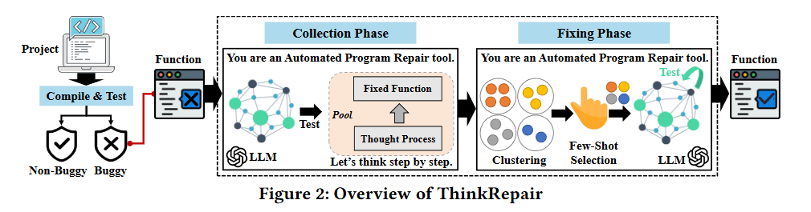
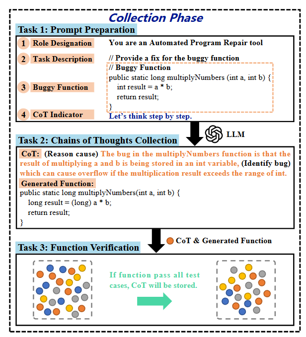
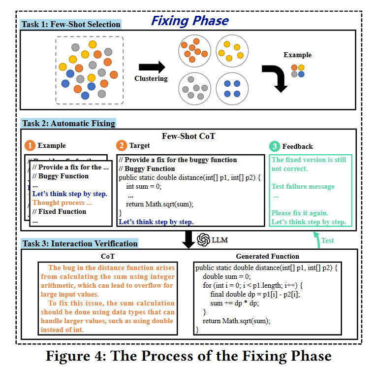
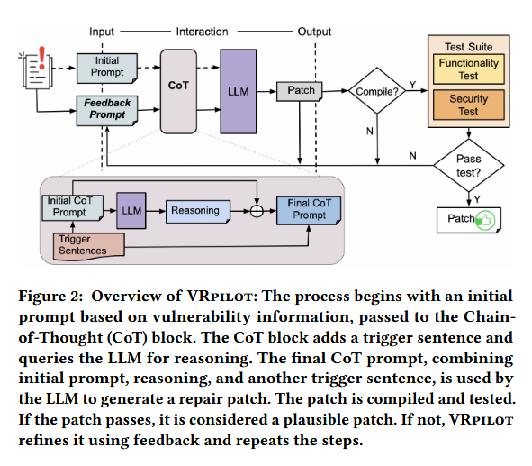
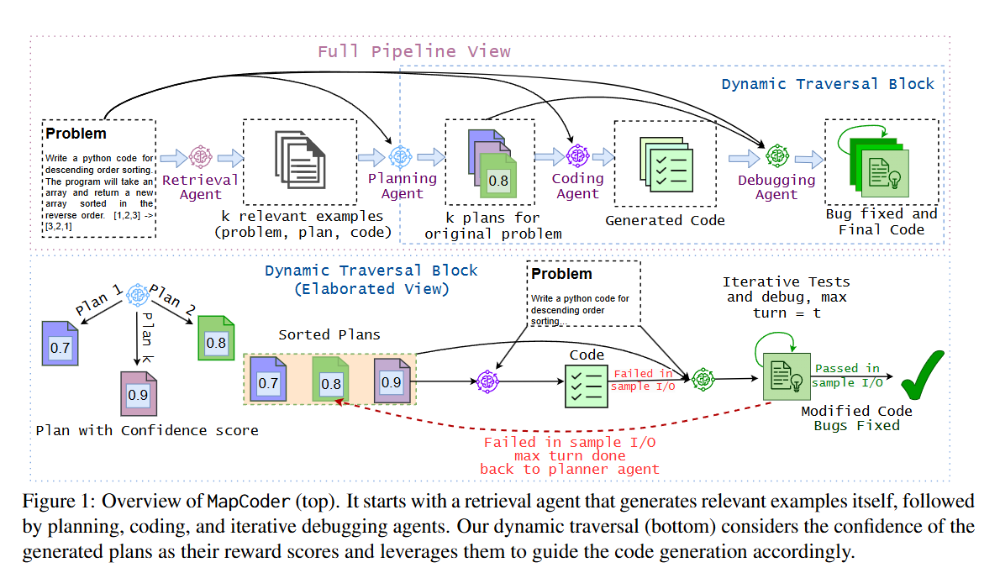
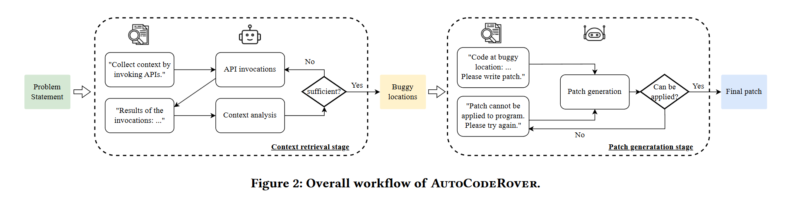
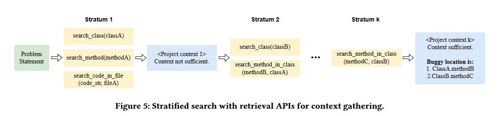
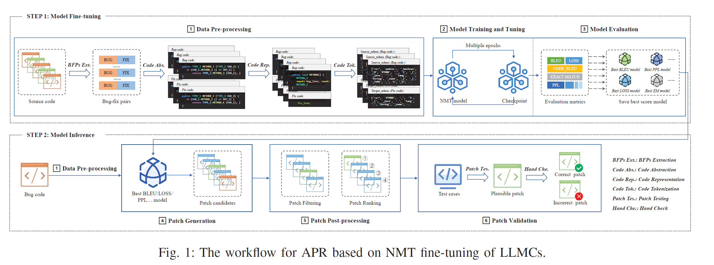
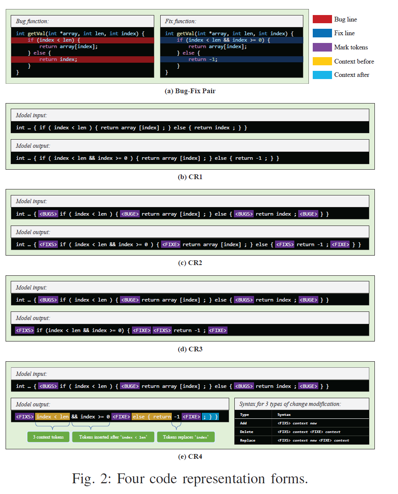
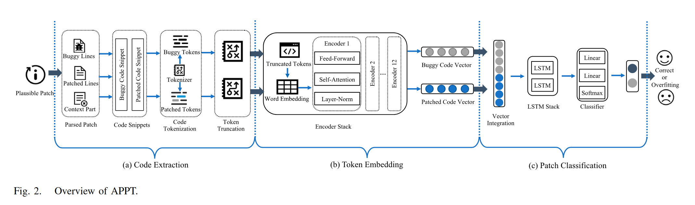

读paper19-基于LLM的缺陷修复5与总结
读paper19-基于LLM的缺陷修复5与总结
ThinkRepair: Self-Directed Automated Program Repair
Datasets：Defects4J and QuixBugs
论文中提到了一点：Few-shot CoT that largely enhances analyzing and reasoning capabilities to understand the semantics of the buggy function
核心点在于针对APR的Automated few-shot CoT。少量的示例可以帮助 LLM 更好地应对所面临的任务，但示例的质量会严重影响其能力。因此，该研究设计了一种自动方法，从 LLMs 中提取思维链，选择有效的示例进行few-shot learning，并用 CoTs 组成prompt进行修复。

Collection Phase

这一步的核心点就在于，如果修复被验证为正确，就将CoT保存，相当于构建一个知识库。
Fixing Phase

针对Collection Phase保存的案例进行few-shot，指导repair
总结几个比较有指导性的研究
架构思路
预处理-修复-后处理的方式，强调反馈，非线性的带有回溯的修复机制
A Case Study of LLM for Automated Vulnerability Repair: Assessing Impact of Reasoning and Patch Validation Feedback
核心是使用思维链增强整个生成过程，分为两个阶段：
- 推理提取（Reasoning Extraction）：最初的提示形式为
X' = Q: [X] A: [T]，其中[X]是问题，[T]是用于触发推理生成的句子（例如 “让我们一步一步思考”）。LLM 将在这一阶段生成推理。 - 答案提取（Answer Extraction）：最终提示形式为
[X'] [Z] [A]，其中[X']是初始提示，[Z]是推理的结果，而[A]是提取解决方案的触发句子。
基于反馈的信息，VRpilot 为反馈迭代构建初始 CoT 提示（反馈提示），形式为 F = Q: [X] [C] [E] A: [T]，其中 [C] 是 LLM 在先前迭代中建议的代码更改的槽位；[E] 是上述反馈错误信息的槽位；[X] 和 [T] 分别是漏洞修复任务和触发句子的槽位。反馈迭代的最终 CoT 提示构建为 [X'][Z][A]，其中 [X'] 是反馈提示 F，[Z] 和 [A] 是用于推理和提取答案的槽位。此迭代过程通过整合来自编译错误、功能测试失败和安全测试的反馈信息，提高生成补丁的质量和准确性。
MapCoder: Multi-Agent Code Generation for Competitive Problem Solving

这篇与上一篇类似，也是一种基于反馈的架构，同时multi plan的设计也非常不错，整体流程跟我的思路也基本一致。细粒度上还是可以细化，比如将 debug 与 fix 的 Agent 分开，以及在推理上的更好的实现。
AutoCodeRover: Autonomous Program Improvement，一种解决 Github issue 的自动化方法
整个流程也是基于迭代的，具有反馈的修复过程

上下文检索
论文中提到了两点，第一点看法是，上下文检索不应局限于单次 API 调用
第二个观察结果是，一些 API 的调用结果为进行新的可能的 API 调用提供了更多元素，这意味着调用检索 API 的过程应该是迭代的
基于这两点，提出了一种分层搜索流程，用于调用上下文检索 API。根据问题陈述，分层搜索会反复调用检索 API 来收集项目代码上下文，并最终输出待修复的潜在错误位置列表。在每个层中，提示 LLM Agent根据当前上下文选择一组必要的 API 调用。在分层 1 中，当前上下文只包含问题陈述；在接下来的分层中，上下文既包含问题陈述，也包含迄今为止搜索到的代码。
通过允许 LLM 选择多个 API 调用，并指示它只选择必要的 API 调用，我们充分利用了上下文，构建了我们认为的最佳上下文。在一个层中的 API 调用执行完毕后，新检索到的代码片段会被添加到当前上下文中。然后，LLM Agent会被提示分析当前上下文是否足以理解问题，从而决定 我们是否继续迭代搜索过程，或我们是否决定将考虑修复的错误位置。

预处理
An Empirical Study on Fine-tuning Large Language Models of Code for Automated Program Repair
该研究将 LLMCs 应用于 NMT 微调范式中的 APR 工作流程涉及以下步骤：1）数据预处理，2）模型训练和调整，3）模型评估，4）补丁生成，5）补丁后处理，6）补丁验证。

其中1-3步为模型微调任务，也是该研究的主要内容，4-6为模型应用。该研究主要聚焦于APR的上游任务，即数据预处理及模型训练。
这一流程涵盖了APR整个的完整流程，即预处理-修复-后处理过程，预处理聚焦于代码等LLM输入数据的处理，后处理聚焦于生成代码的质量打分。
其中数据预处理部分有较大启发性，虽然是针对LLM训练数据的预处理，但是对于LLM代码修复任务中的代码数据处理也有不错的指导意义。
其中有如下的关键点：
- 代码抽象处理：通过规范化代码元素，代码抽象可以减轻词汇表外（OOV）问题，这个方法应用已经比较广。
- 代码表示：基于 token sequence 的四种表示方法
- CR1：NMT-based APR 工作的原始表示，它以整个有缺陷的方法作为输入，以整个修复的方法作为输出。CR1 旨在使模型能够自动修复缺陷，无需故障定位（FL）。
- CR2：CR2 基于 CR1，其中将错误 / 修复代码块用特殊标记符（
， ， ， ）标记，以便模型在 FL 信息的帮助下学习从错误代码到修复代码的转换。 - CR3：受 SequenceR 的启发，从 CR2 中去除了修复代码的上下文，以减少模型输出的长度，加快训练和预测速度。这种表示方法用于分析简化修复目标（即输出）对修复能力的影响。（修复代码的上下文与错误代码上下文基本一致，可以看作冗余）
- CR4：这是 VRepair 的多代码块修复的代码表示方法。与 CR3 不同，CR4 使用不同的标记符方式来区分不同的修复行为（添加、删除、替换），因此具有更精细的标记粒度。
其中CR3，CR4都取得了不错的效果，CR4相对CR3提升不大（几个点的差距）。也就是说代码在保证缺陷相关上下文完整性的前提下去除冗余代码能够对代码修复性能带来很大提升，当然这里一方面这毕竟是针对的模型训练，另一方面是这一任务基本等同于缺陷定位，不过我们无需精准定位到错误位置，只需要定位到缺陷相关函数上下文即可。
当然文中还提到了一点，即将模型都构建为编码器 - 解码器结构，将大型语言模型（LLMCs）扩展到用于微调的 NMT 模型架构。
这里其实还是强调编码器对于代码理解，尤其是代码缺陷定位上相较于主流 decode-only LLM 的优势。
后处理
APPT: Boosting Automated Patch Correctness Prediction via Fine-Tuning Pre-Trained Models
基于神经网络的，核心其实就是二分类问题的分类器，实现相对简单

代码提取
一般来说 APR 会得到一个 plausible patch，其中增删代码用 “+、-” 进行了标注，类似于 Github 的 diff，因此可以从这个 patch 中得到缺陷代码段和修复后的代码段。
Tokenizer 主要解决词汇量不足的问题，研究中保留了原有的标记化词汇，而不是使用字节对编码算法建立新的词汇，这样 APPT 就能继承自然语言理解能力，并从一个良好的起点开始学习预测。
此外由于预训练模型的输入长度受限（比如 BERT 的 token 输入长度限制为 512），所以还需要截断。
嵌入
将代码的 Tokens 映射到向量空间。这每一层不就是 transformer 的编码器部分？代码实现是用 BERT 实现的。但是如果选择 BERT 的话必须进行微调，或者自己使用纯代码数据集从头进行训练。这部分在 EXPERIMENT 的 Model Selection 部分有提及。
分类
一个 LSTM 神经网络，将拼接后的向量进行二分类。
最后一个注意的点是向量拼接方式，使用 torch.cat() 优于其他方法
CODEJUDGE : Evaluating Code Generation with Large Language Models：使用 slow thinking 的 LLM 进行代码评估
主要分为两步，首先是对代码修复任务进行分析总结，然后将修复代码与修复任务进行对齐。
- Analyze then Summarize：分析任务提供了一个逐步评估指南，要求 LLM 从任务描述中识别出所需功能，检查生成代码的逻辑，并报告任何未满足的要求。随后，要求 LLM 检查分析报告，并决定代码是否正确。
- Taxonomy-Guided Fault Localization：将修复代码与修复任务的不一致程度划分为了四类共八种 level，最终计算加权得分来评判代码修复质量。